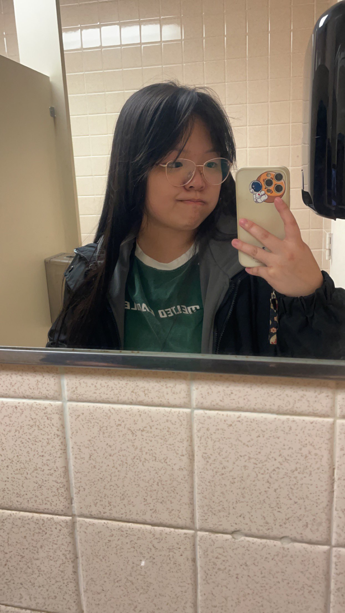

About Me
Hello there! I'm a passionate computer science enthusiast on an exciting journey of perpetual learning. As a dedicated major in computer science, I thrive on the dynamic nature of technology and its ever-evolving landscape. My curiosity knows no bounds, and I approach each challenge as an opportunity to expand my knowledge and skill set.
From coding to problem-solving, I find joy in unraveling the intricacies of the digital realm. Whether it's delving into algorithms, exploring new programming languages, or embracing the latest advancements, I am always eager to embrace the next intellectual adventure.
Education
Bachelor of Science, Computer Science - Kennesaw State University (2022-2025)
Projects
Restaurant Service Device | Java, Figma
- Desgigned and developed a smart restaurant service device using Figma
- Utilized UML diagrams to document and visualize the system's architecture, ensuring efficient functionality
- Collarborated with cross-functional teams to gather requirements, validate design concepts, and iterate on the user interface
Shipping Method | Java, Visual Studio Code, IntelliJ
- Developed a custom model using Java to efficiently allocate available cubic space to items for shipping
- Utilized advanced algorithms and data structres to create an optimized packing solution
- Presented the project to judges, explaining the model's algorithms
- Honed teamwork and collaboation skills by working effectively within a fast-paced hackathon environment
Skills
Programming Langugages:
- Java
- Python
- HTML
- CSS
- JavaScript
- GDScript
- SQL
- R
Developer Tools:
- IntelliJ
- Visual Studio Code
- Figma
- R Studio
- Godot Engine
Software Skills:
- Microsoft Office (Excel, Powerpoint)
Involvement
Team Manager, VALORANT Esports
- Sperheaded the creation and management of several VALORANT teams
- Maintained open lined of communication to enhance team cohesion and performance
- Utilized performance data to make informed decisions regarding roster changes, practice strategies, and team compositions
- Acted as a mentor for team members, inspiriting them to reach their full potential both individually and collectively
Treasurer, Kennesaw State University Esports Club
- Manages the financial operation of the Esports Club
- Collaborates with the club's executive team to plan major events, managing event budgets, and tracking expenses
- Develops and maintains a comrehensive budget plan, effectively allocating resources for club actitives, events, and equipment purchases
- Conducts regular financial audits to ensure compliance with university policies and transparency in financial transactions